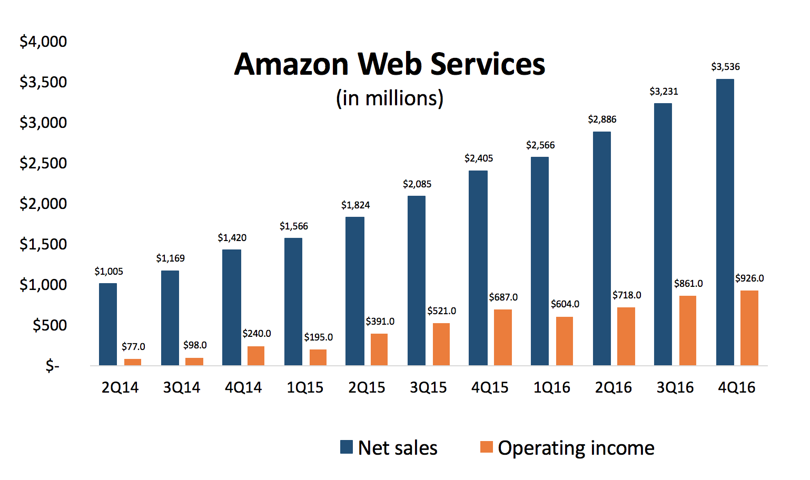

1.AWS аккаунтын қалай жасау керектігін түсіндіріңіз.
2.EC2 инстанциясын іске қосу және конфигурациялау.
3.S3 сақтау қызметін пайдаланып, файл жүктеу.
4.AWS CLI (Command Line Interface) құралын орнату және конфигурациялау.
5.AWS CloudFormation көмегімен инфрақұрылымды автоматтандыру.
